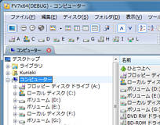
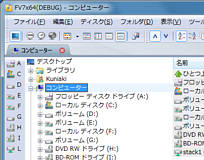

| 左クリック | ドライブを変更します。 |
| 右クリック | ドライブに対応したコンテキストメニューを表示します。 |
| 左ダブルクリック | 選択したドライブのカレントフォルダを初期表示フォルダとしてもう１つのFileVisorを起動します。 |
| ファイルやフォルダなどをドロップ | ファイル・フォルダをドラッグし、目的のドライブにドロップすると、当該ドライブのフォルダを選択して、コピー・移動またはショートカットを作成することができます。 |
ドライブ バーの配置（横置き・縦置き）を変更するには、 メニュー［表示］-［パネル・バー］-［バーの配置］で 設定をおこないます。
横置き

縦置き

ドライブ バーに表示するアイコンのサイズを変更するには、 メニュー［表示］-［パネル・バー］-［バーの配置］で 設定をおこないます。